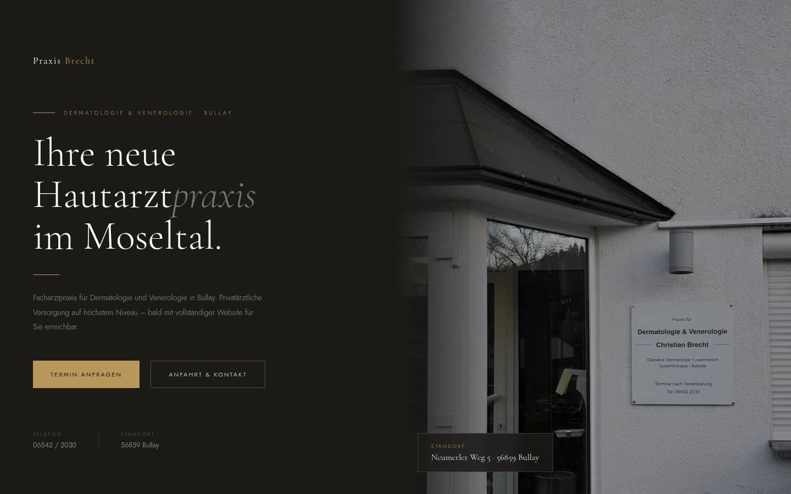
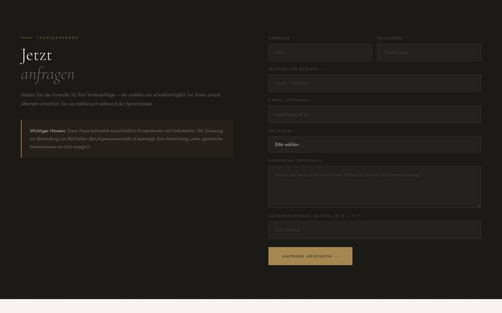
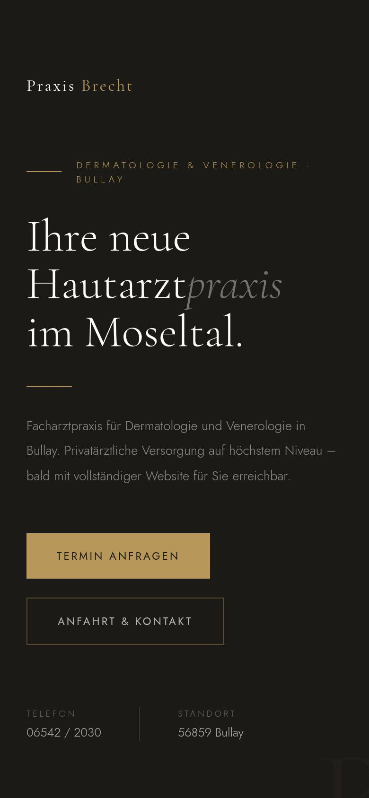

Ich weiß, dass die jetzige Seite nur als Übergang gedacht war. Sie steht seit dem 23. Mai so. Hier ist, was einem Patienten heute beim ersten Besuch auffällt, nur das, was man auf der Seite sieht.
Lieber gleich sprechen? Termin buchen oder WhatsApp
Oben steht „bald mit vollständiger Website für Sie erreichbar“, weiter unten „Website in Vorbereitung“. Die Praxis ist längst offen, die Seite wirkt aber noch wie eine Baustelle.

Startseite heute am Computer.
Im Entwurf: eine fertige Seite, die gleich sagt, was Sie machen. Ansehen
Hautkrebsvorsorge, Operationen, Laser und die anderen Leistungen stehen nur als Auswahl im Formular. Wer die Seite überfliegt, erfährt nicht, womit er zu Ihnen kommen kann.

Im Entwurf: sechs Anliegen in Patientensprache, gleich unter dem Start. Ansehen
Es gibt kein Foto von Ihnen und keinen Satz in Ihren Worten. Der Text bleibt allgemein („auf höchstem Niveau“), Schwarz und Gold mit dem großen „B“ wirken eher nach Vorlage als nach Ihrer Praxis.
Im Entwurf: ein paar ruhige Sätze in Ich-Form, die einem die Scheu vor dem Termin nehmen. Ansehen
Am Computer sieht man den Eingang, am Handy nicht. Gerade dort schauen die meisten zuerst.

Startseite heute am Handy.
Im Entwurf: das Türfoto auch am Handy, mit dem Hinweis, wo das Schild hängt und wo man parkt. Ansehen
Das Formular liegt weiter unten, danach heißt es warten. Direkt daneben steht „ueber“, „moeglich“ und „BG-Faellen“ ohne Umlaute, das fällt beim Lesen auf.
Im Entwurf: Anruf und Online-Termin gleich oben, mit einer kleinen Vorschau, wie so ein Termin ablaufen kann. Ansehen
Das alles ist schnell behoben. Wenn Sie darüber sprechen möchten:
Alexander Mäding, praxisecht.de
anfrage@praxisecht.de
Stand: 26. November 2026. Bilder: eigene Aufnahmen von hautarzt-bullay.de. Zum Entwurf